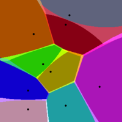

Reproyección
Este geoproceso permite calcular el diagrama de voronoi de una nube de puntos. También se pueden especificar capas de líneas o de polígonos como entrada, en cuyo caso tomará como punto de entrada el primer punto de cada geometría.

El diagrama de voronoi de una nube de puntos es una capa de polígonos que cubre completamente el espacio. Cada polígono tiene la caractéristica de que todos los puntos encerrados por su área tienen un punto de la nube como más cercano. Todo diagrama de voronoi tiene asociada una única triangulación de Delaunay (TIN).